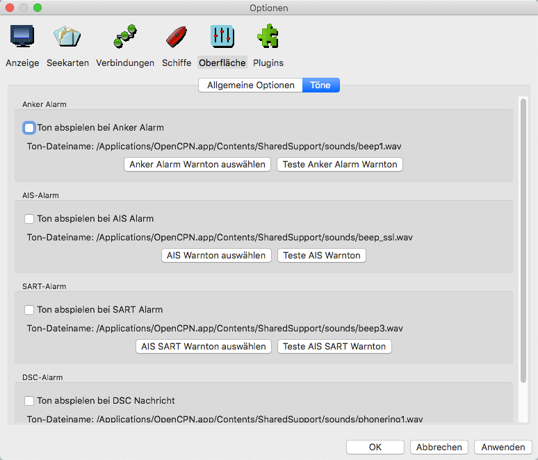

Einstellungen Oberfläche
Einstellungen "Oberfläche"
Zunächst die allgemeinen Einstellungen:
Sprache Diese OpenCPN Version ist vordringlich für Deutsch gemacht gemacht worden. Stellen Sie daher zuerst die Sprache auf deutsch ein und starten Sie das Programm dann neu, bevor Sie andere Einstellungen vornehmen.
Schrift Option. Für viele Elemente auf dem Display kann die Schrift gewählt werden. Das kann große Auswirkungen auf die Lesbarkeit von Elementen haben, selbst die Schrift von Vektorkarten ist teilweise einstellbar.
Beispiel
für eine Schrifteinstellung
Es gibt einen Nebeneffekt der Schrifteinstellung: Es muß zunächst ein Textelement auf dem Bildschirm sichtbar gewesen sein, damit es in der Liste der Textelemente erscheint und zur Änderung verfügbar ist. Anschließend bleibt es in dieser Liste. Der Listen-Eintrag "AIS Rollover" erscheint z.B. erst nach einer AIS Rollover Nachricht. Daher ist diese Liste nach einer Neuinstallation oder neuer Konfig-Datei auch zunächst kleiner.
Statusleiste anzeigen Die Statusleiste unten am Fenster zeigt viele Navigationsinformationen. Sind diese Informationen an anderer Stelle verfügbar, kann sie abgeschaltet werden, um den verfügbaren Kartenplatz zu vergrößern.
Zeige Karten Leiste Die farbigen Balken über der Statusleiste.
Zeige Kompaß/GPS Status-Fenster Zeigt/versteckt das normalerweise oben rechts befindliche Kompaß/GPS Status-Fenster. Ein Klick in dies Fenster wechselt zwischen Nord- und Vorausschau-Modus.
Automatisches Ausblenden der Symbolleiste nach...: Verkleinert die Werkzeugleiste automatisch nach Ablauf der eingestellten Sekunden.
Schiffsglocke läuten Aktiviert die Glasenuhr.
Aktivierung Touchscreen Bedienung Vergrößerung der Schaltflächen usw. für Touchscreen Bildschirme. (Nicht bei macOS verwenden)
Aktivierung skalierende Grafik-Anzeige macht genau das.
Aktivierung Einstellung Inland ECDIS Norm Achtung, damit wird OpenCPN an den Standard von Binnenkarten angepaßt.
Verwende dunkle Fensterattribute Umschaltung in den macOS Dunkelmodus.
Skalierungsfaktor Schieberegler Diese Schieberegler erlauben die Anpassung verschiedener Faktoren.
Dann die Einstellungen für Töne:

Das Bild ist selbsterklärend. Es kann sowohl bestimmt werden, ob bei diesen Alarmzuständen ein Ton abgespielt werden soll, und es kann festgelegt werden, welcher Ton abgespielt werden soll. Die hier gezeigten Werte sind die Standard Werte. Name und Ort der Ton-Datei werden angezeigt.